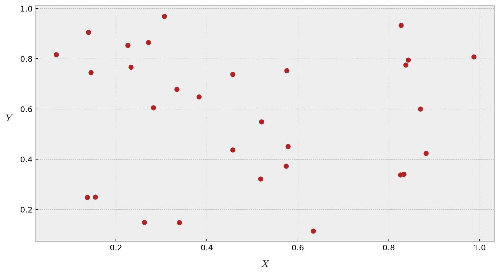
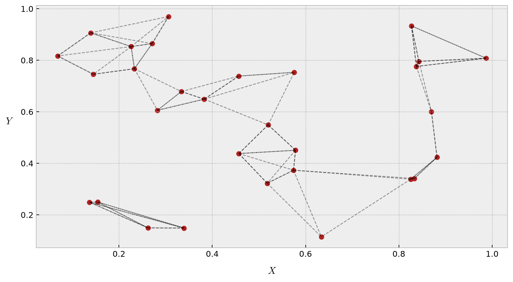
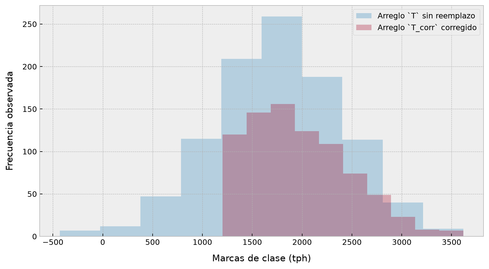

import numpy as npComparación, ordenamiento y reemplazos en arreglos
Introducción a los operadores lógicos y su importancia en el filtrado de datos
ImportantIdea central
En este apunte estudiaremos cómo Numpy permite no sólo calcular con arreglos, sino también compararlos, filtrarlos, seleccionar subconjuntos de datos y reorganizar su contenido. A partir de operadores de comparación, funciones Booleanas, máscaras lógicas y esquemas más avanzados de indexación, veremos que los arreglos pueden usarse como estructuras dinámicas sobre las cuales es posible tomar decisiones de selección y transformación de manera vectorizada, expresiva y eficiente. Estas herramientas constituyen la base de gran parte del filtrado y preprocesamiento de datos en Python.
4.1 Operadores de comparación
Cuando comenzamos a estudiar las operaciones aritméticas sobre arreglos de Numpy, introdujimos el conjunto de funciones universales (ufuncs). Vimos que el uso de +, -, *, / y otros operadores nos permitía generar operaciones elemento a elemento en los arreglos (siguiendo, por supuesto, las reglas de broadcasting). Numpy también tiene disponibles operadores de comparación, tales como < (menor que) y > (mayor que), los cuales operan igualmente elemento a elemento. El resultado de estos operadores de comparación es siempre un arreglo con valores de tipo Booleano.
Veamos este tipo de operaciones mediante ejemplos de código:
# Creamos un arreglo unidimensional (que llamamos x).
x = np.arange(start=1, stop=10, step=1)
# Mostramos el arreglo en pantalla.
xarray([1, 2, 3, 4, 5, 6, 7, 8, 9])# Mayor que.
x > 3array([False, False, False, True, True, True, True, True, True])# Menor que.
x < 3array([ True, True, False, False, False, False, False, False, False])# Mayor o igual que.
x >= 3array([False, False, True, True, True, True, True, True, True])# Menor o igual que.
x <= 3array([ True, True, True, False, False, False, False, False, False])# No es igual a.
x != 3array([ True, True, False, True, True, True, True, True, True])# Es igual a.
x == 3array([False, False, True, False, False, False, False, False, False])Vemos pues que la aplicación de cualquier operador de comparación sobre un arreglo verifica la condición definida por dicho operador, elemento a elemento, y devuelve como respuesta un arreglo de la misma geometría que el original, cuyos elementos son Booleanos. Tales elementos denotan un valor cierto (True) si la condición efectivamente se cumple, y un valor falso (False) si no lo hace.
También es posible realizar comparaciones elemento a elemento considerando dos arreglos, incluyendo, de esta manera, expresiones más compuestas:
# Una expresión comparativa compuesta.
(2*x) == (x - 2*x + x**2)array([False, False, True, False, False, False, False, False, False])Tal y como en el caso de las operaciones aritméticas, y de las funciones trigonométricas, logarítmicas, etc., estos operadores de comparación pueden aplicarse en arreglos independientemente de su tamaño o número de dimensiones. Por ejemplo, en el caso de un arreglo bidimensional, podemos tener:
# Generamos una semilla aleatoria fija.
rng = np.random.default_rng(42)
# Construimos un arreglo bidimensional.
M = rng.integers(low=1, high=10, size=(4, 4))
# Y lo mostramos en pantalla.
Marray([[1, 7, 6, 4],
[4, 8, 1, 7],
[2, 1, 5, 9],
[7, 7, 7, 8]])# Los operadores de comparación pueden aplicarse sin problemas sobre este arreglo bidimensional.
M <= 5array([[ True, False, False, True],
[ True, False, True, False],
[ True, True, True, False],
[False, False, False, False]])Vemos pues que el resultado de la operación M <= 5 es, como cabría esperar, un arreglo con elementos Booleanos, con la misma geometría del arreglo original.
4.2 Funciones con resultado Booleano
Dado un arreglo arbitrario, Numpy nos provee de una serie de funciones que nos permiten realizar consultas sobre la data almacenada en él, y cuyas salidas corresponden a arreglos con elementos Booleanos. Para ejemplificar su uso, trabajaremos con el arreglo bidimensional M que definimos previamente.
Los valores Booleanos en Numpy representan siempre valores binarios, con la convención de que el valor True es igual a 1, y el valor False es igual a 0. De esta manera, los elementos de un arreglo Booleano siempre podrán sumarse, a fin de conocer cuántos de esos elementos cumplen con una determinada condición impuesta mediante algún operador de comparación.
Un ejemplo sencillo sería consultar cuántos elementos de M cumplen con la condición M > 5. Esto podemos hacerlo fácilmente usando la función np.sum(), aprovechando incluso que esta función permite construir agregaciones:
# Conteo de elementos del arreglo M que cumplen con la condición M > 5.
np.sum(M > 5)np.int64(9)# Conteo de elementos del arreglo M que cumplen con la condición M > 5, verificados en cada fila.
np.sum(M > 5, axis=1)array([2, 2, 1, 4])# Conteo de elementos del arreglo M que cumplen con la condición M > 5, verificados en cada columna.
np.sum(M > 5, axis=0)array([1, 3, 2, 3])Naturalmente, podemos estar interesados en saber si alguno o todos los elementos de un determinado arreglo cumplen con alguna condición. Para ello, podemos utilizar las funciones np.any() o np.all(), respectivamente:
# ¿Hay algún valor mayor que 8?
np.any(M > 8)np.True_# ¿Hay algún valor menor que cero?
np.any(M < 0)np.False_# ¿Son todos los valores menores que 10?
np.all(M < 10)np.True_# ¿Son todos los valores iguales a 6?
np.all(M == 6)np.False_# ¿Son todos los valores en cada fila menores que 8?
np.all(M < 8, axis=1)array([ True, False, False, False])# ¿Hay algún valor en cada columna menor que 4?
np.any(M < 4, axis=0)array([ True, True, True, False])4.3 Operadores Booleanos
Los operadores Booleanos permiten, mediante el uso de ciertos símbolos, conectar dos proposiciones o sentencias lógicas a fin de construir proposiciones compuestas cuyo resultado es algún valor de verdad (Booleano). Numpy nos provee de varias ufuncs que emulan el comportamiento de estos operadores lógicos mediante el correspondiente símbolo utilizado normalmente en Python para la ejecución de este tipo de operaciones. Tales símbolos son &, |, ^ y ~, los que se corresponden con las operaciones “AND”, “OR”, “XOR” y “NOT”. Las respectivas funciones universales de Numpy (elemento a elemento) que se corresponden con estos operadores son las que se muestran en la Tabla 4.1.
| Operador | ufunc equivalente |
|---|---|
& |
np.bitwise_and() |
| |
np.bitwise_or() |
^ |
np.bitwise_xor() |
~ |
np.bitwise_not() |
Veamos cómo trabajan estos operadores por medio de un ejemplo:
# Construimos un arreglo que emula el histórico de rendimiento
# de un chancador primario durante los últimos 100 días.
hist = rng.normal(loc=1250, scale=750, size=100) + 3600# Realizamos algunas consultas relativas a esta data.
print(f"Número de días con procesamiento menor a 4000 tph = {np.sum(hist < 4000)}")
print(f"Número de días con procesamiento entre 4500 y 5000 tph = {np.sum((hist >= 4500) & (hist <= 5000))}")
print(f"Número de días con procesamiento sobre 6000 tph o bajo 4000 tph = {np.sum((hist > 6000) | (hist < 4000))}")Número de días con procesamiento menor a 4000 tph = 7
Número de días con procesamiento entre 4500 y 5000 tph = 32
Número de días con procesamiento sobre 6000 tph o bajo 4000 tph = 8Notemos que, en el bloque de código anterior, los paréntesis cobran extrema importancia. Esto es debido a que éstos intervienen directamente en la jerarquización de la operación completa. Por lo tanto, en este ejemplo, primero resolvemos las comparaciones, y luego las conjugamos mediante el operador &, o bien, las unimos mediante el operador |.
4.4 Masking
En los ejemplos anteriores, verificamos la construcción de agregaciones calculadas directamente sobre arreglos Booleanos. Una herramienta aún más poderosa en Numpy corresponde a la utilización de arreglos Booleanos como máscaras o filtros, a fin de seleccionar ciertos subconjuntos bien definidos de la data de nuestro interés. Este proceso se conoce como masking.
Consideremos nuestro arreglo M, previamente construido, y supongamos que queremos obtener un sub-arreglo consistente de todos los elementos de M que son menores que 4. Para ello, procedemos enmascarando la condición de interés (M < 4) entre corchetes. Luego tenemos:
# El arreglo M.
Marray([[1, 7, 6, 4],
[4, 8, 1, 7],
[2, 1, 5, 9],
[7, 7, 7, 8]])# Obtenemos un arreglo compuesto únicamente por los elementos de M que son menores que 4.
M[M < 4]array([1, 1, 2, 1])La selección anterior sigue una lógica bastante sencilla: la condición M < 4 devuelve un arreglo con elementos Booleanos de las mismas dimensiones que el arreglo original M. Por lo tanto, al escribir M[M < 4], el corchete indica que la selección se realizará con respecto a las posiciones del arreglo M < 4 tales que su valor sea igual a True.
El resultado de una selección mediante masking es siempre un arreglo unidimensional.
También podemos combinar varias condiciones Booleanas a fin de obtener filtros más expresivos. Por ejemplo, si quisiéramos seleccionar los elementos de M que son mayores que 3 y menores que 8, podríamos escribir:
# Selección mediante una máscara compuesta.
M[(M > 3) & (M < 8)]array([7, 6, 4, 4, 7, 5, 7, 7, 7])4.5 Fancy indexing
En las secciones previas, aprendimos a acceder y modificar porciones de arreglos mediante la implementación de un indexado sencillo (por ejemplo, x[0]), slicing (por ejemplo, x[:5]) y masking (por ejemplo, x[x != 0]). En esta subsección, echaremos un vistazo a otro estilo muy particular de indexación de arreglos, conocido en la práctica como fancy indexing. Este tipo de indexación es parecido al que ya aprendimos, pero esta vez indexamos conforme arreglos completos. Esto nos permite acceder rápidamente a y/o modificar subconjuntos de nuestros arreglos de mayor complejidad.
Este tipo de indexación es conceptualmente simple. Consiste simplemente en pasar un arreglo de índices para acceder a múltiples elementos de un arreglo al mismo tiempo. Por ejemplo, consideremos el siguiente arreglo:
# Generamos una semilla aleatoria fija.
rng = np.random.default_rng(42)
# Creamos el arreglo `x`.
x = rng.integers(low=1, high=100, size=20)
# Y lo mostramos en pantalla.
print(x)[ 9 77 65 44 43 86 9 70 20 10 53 97 73 76 72 78 51 13 84 45]Supongamos que queremos acceder a tres diferentes elementos. Podríamos, dado aquello, hacer algo como esto:
# Acceso a algunos elementos de `x`.
[x[13], x[7], x[18]][np.int64(76), np.int64(70), np.int64(84)]Alternativamente, podemos también pasar un conjunto de índices para obtener el mismo resultado:
# Definimos las posiciones a escoger en una lista.
indices = [13, 7, 18]
# Y generamos la selección.
x[indices]array([76, 70, 84])Con este esquema de indexación, la geometría de los resultados refleja siempre la geometría de los arreglos que definen los índices, en vez de la geometría del arreglo indexado:
# Creamos un arreglo de índices.
indices = np.array([
[13, 7],
[18, 2]
])
# Y generamos la selección a partir del arreglo anterior.
x[indices]array([[76, 70],
[84, 65]])Este esquema de selección se conoce como fancy indexing: nos permite definir posiciones mediante reglas simples que se describen por medio de listas e incluso arreglos, para luego realizar selecciones de datos conforme dichas reglas y en las posiciones descritas por las geometrías de esas listas y/o arreglos.
El esquema de fancy indexing también funciona en dimensiones múltiples. Consideremos el siguiente arreglo:
# Definimos un arreglo 2D de enteros.
M = rng.integers(low=1, high=20, size=(6, 6))
# Y lo mostramos en pantalla.
Marray([[10, 8, 4, 18, 15, 13],
[ 8, 16, 11, 9, 9, 5],
[ 2, 11, 17, 2, 17, 16],
[ 6, 13, 4, 15, 14, 7],
[ 2, 19, 9, 17, 13, 15],
[15, 4, 7, 9, 10, 1]])Como en el caso del indexado simple, el primer índice se refiere a las filas y el segundo a las columnas:
# Definimos las posiciones a indexar por filas y columnas.
row = np.array([0, 2, 4])
col = np.array([1, 3, 5])
# Y realizamos la selección.
M[row, col]array([ 8, 2, 15])Notemos que el primer valor en el resultado es M[0, 1], el segundo es M[2, 3], y el tercero es M[4, 5]. El pareo de índices en el fancy indexing sigue las mismas reglas verificadas cuando estudiamos el concepto de broadcasting. Siempre es importante recordar que, con el fancy indexing, el valor retornado por la operación de indexado refleja siempre la geometría de los índices transmitidos mediante broadcasting, en vez de la geometría del arreglo que indexamos.
Vale la pena enfatizar un detalle importante: la operación M[row, col] no devuelve una submatriz rectangular, sino una selección pareada de posiciones. Si lo que quisiéramos fuera seleccionar el rectángulo definido por las filas row y las columnas col, podríamos usar np.ix_():
# Selección rectangular de filas y columnas.
M[np.ix_(row, col)]array([[ 8, 18, 13],
[11, 2, 16],
[19, 17, 15]])Ejemplo 4.1 – Selección integrada: Cerraremos esta primera parte del apunte con un ejemplo un poco más elaborado, donde combinaremos varias de las herramientas revisadas hasta ahora: operadores de comparación, funciones Booleanas, masking, slicing y fancy indexing.
Supongamos que el siguiente arreglo P representa información de 12 muestras de una campaña metalúrgica. Cada fila corresponde a una muestra, y las columnas representan, respectivamente:
- Tratamiento de molienda (
tph). - Presión de alimentación en hidrociclones (
psi). - Porcentaje retenido en malla de control (
%). - Ley estimada de cobre (
% Cu).
# Construimos el arreglo P.
P = np.array([
[5100, 11.2, 29.4, 0.62],
[4800, 10.8, 31.1, 0.58],
[5300, 12.4, 27.9, 0.67],
[4550, 9.8, 35.0, 0.51],
[6100, 13.1, 24.8, 0.73],
[5900, 12.7, 26.1, 0.70],
[4200, 9.5, 36.4, 0.49],
[5050, 11.0, 30.2, 0.61],
[5700, 12.0, 28.0, 0.66],
[4450, 10.1, 34.1, 0.53],
[6250, 13.6, 23.9, 0.75],
[4950, 10.7, 31.0, 0.59],
])
# Mostramos el arreglo.
Parray([[5.10e+03, 1.12e+01, 2.94e+01, 6.20e-01],
[4.80e+03, 1.08e+01, 3.11e+01, 5.80e-01],
[5.30e+03, 1.24e+01, 2.79e+01, 6.70e-01],
[4.55e+03, 9.80e+00, 3.50e+01, 5.10e-01],
[6.10e+03, 1.31e+01, 2.48e+01, 7.30e-01],
[5.90e+03, 1.27e+01, 2.61e+01, 7.00e-01],
[4.20e+03, 9.50e+00, 3.64e+01, 4.90e-01],
[5.05e+03, 1.10e+01, 3.02e+01, 6.10e-01],
[5.70e+03, 1.20e+01, 2.80e+01, 6.60e-01],
[4.45e+03, 1.01e+01, 3.41e+01, 5.30e-01],
[6.25e+03, 1.36e+01, 2.39e+01, 7.50e-01],
[4.95e+03, 1.07e+01, 3.10e+01, 5.90e-01]])Podemos comenzar realizando algunas consultas Booleanas globales:
# ¿Hay alguna muestra con tratamiento sobre 6000 tph?
np.any(P[:, 0] > 6000)np.True_# ¿Son todas las muestras de ley superior a 0.45 % Cu?
np.all(P[:, 3] > 0.45)np.True_Ahora supongamos que queremos filtrar únicamente las muestras que cumplan simultáneamente las siguientes condiciones:
- Tratamiento mayor o igual que 5000 tph.
- Presión mayor que 11 psi.
- Ley de cobre mayor o igual que 0.62 %.
Podemos construir una máscara compuesta y aplicarla sobre el arreglo completo:
# Construimos una máscara compuesta.
mask = (P[:, 0] >= 5000) & (P[:, 1] > 11) & (P[:, 3] >= 0.62)
# Aplicamos la máscara.
P_filtrado = P[mask]
P_filtradoarray([[5.10e+03, 1.12e+01, 2.94e+01, 6.20e-01],
[5.30e+03, 1.24e+01, 2.79e+01, 6.70e-01],
[6.10e+03, 1.31e+01, 2.48e+01, 7.30e-01],
[5.90e+03, 1.27e+01, 2.61e+01, 7.00e-01],
[5.70e+03, 1.20e+01, 2.80e+01, 6.60e-01],
[6.25e+03, 1.36e+01, 2.39e+01, 7.50e-01]])Notemos que el resultado es un subconjunto de filas del arreglo original P, es decir, aquellas muestras que cumplen simultáneamente con todas las condiciones impuestas.
Si quisiéramos ahora quedarnos sólo con las columnas relativas al tratamiento y la ley de cobre dentro de ese subconjunto, podemos combinar el filtrado anterior con fancy indexing sobre columnas:
# Seleccionamos únicamente las columnas 0 y 3 del subconjunto filtrado.
P_filtrado[:, [0, 3]]array([[5.10e+03, 6.20e-01],
[5.30e+03, 6.70e-01],
[6.10e+03, 7.30e-01],
[5.90e+03, 7.00e-01],
[5.70e+03, 6.60e-01],
[6.25e+03, 7.50e-01]])También podemos usar slicing para inspeccionar rápidamente un bloque rectangular del arreglo original. Por ejemplo, las primeras cinco muestras y las tres primeras variables:
# Selección por slicing.
P[:5, :3]array([[5100. , 11.2, 29.4],
[4800. , 10.8, 31.1],
[5300. , 12.4, 27.9],
[4550. , 9.8, 35. ],
[6100. , 13.1, 24.8]])Finalmente, podemos usar fancy indexing en ambos ejes para inspeccionar posiciones puntuales de interés. Supongamos que queremos revisar las muestras en las filas 0, 4, 8 y 10, pero sólo en las columnas asociadas a tratamiento y ley:
# Selección rectangular usando fancy indexing.
filas = np.array([0, 4, 8, 10])
columnas = np.array([0, 3])
P[np.ix_(filas, columnas)]array([[5.10e+03, 6.20e-01],
[6.10e+03, 7.30e-01],
[5.70e+03, 6.60e-01],
[6.25e+03, 7.50e-01]])Este ejemplo resume bastante bien la lógica general de esta parte del curso: comparar valores, construir reglas Booleanas, filtrar mediante máscaras y luego seleccionar subconjuntos específicos de datos mediante distintos esquemas de indexación. En la práctica, una fracción muy importante del preprocesamiento de datos en Python consiste precisamente en encadenar este tipo de operaciones de manera clara y eficiente. ◼︎
4.6 Ordenamiento de arreglos
Hasta este punto, hemos considerado herramientas que nos sirven para acceder y manipular los datos almacenados en nuestros arreglos con Numpy. Procederemos ahora a cubrir algunas rutinas que nos permiten generar algún tipo de orden en los elementos que constituyen tales arreglos.
A pesar de que Python tiene disponibles las funciones nativas sort() y sorted(), las cuales funcionan perfecto en objetos tales como listas, no las discutiremos en este curso debido a que la función np.sort() es mucho más eficiente que las alternativas nativas (en tiempo de ejecución). De esta manera, para retornar la versión ordenada de un arreglo, sin modificar nada más, podemos escribir:
# Definimos una semilla aleatoria fija.
rng = np.random.default_rng(10)
# Creamos nuestro arreglo.
u = rng.integers(low=1, high=20, size=10)
# Y lo mostramos en pantalla.
uarray([15, 19, 6, 4, 16, 16, 10, 3, 16, 10])# Retornamos la versión ordenada del arreglo u.
np.sort(u)array([ 3, 4, 6, 10, 10, 15, 16, 16, 16, 19])Numpy también nos provee del método sort(), aplicable sobre cualquier arreglo, y que también permite ordenar sus elementos. Sin embargo, este método no retorna una copia del arreglo con sus elementos ordenados (como la función np.sort()), sino que modifica el arreglo respectivo, ordenando sus elementos:
# Ordenamos el arreglo u mediante el método sort().
u.sort()
# Mostramos el arreglo ordenado.
uarray([ 3, 4, 6, 10, 10, 15, 16, 16, 16, 19])Con frecuencia, estamos interesados en determinar las posiciones relativas a los elementos de un arreglo que, de seleccionarlas, retornan el arreglo ordenado. Para ello, podemos utilizar la función np.argsort():
# Creamos el arreglo.
v = rng.integers(low=1, high=10, size=10)
# Y lo mostramos en pantalla.
varray([2, 2, 4, 7, 4, 8, 1, 4, 5, 9])# Determinamos las posiciones de los elementos que permiten ordenar el arreglo.
np.argsort(v)array([6, 0, 1, 2, 4, 7, 8, 3, 5, 9])# Estos índices nos permiten listar los elementos ordenadamente en nuestro arreglo.
v[np.argsort(v)]array([1, 2, 2, 4, 4, 4, 5, 7, 8, 9])La función np.sort() también permite operar de forma agregada. Por lo tanto, es posible ordenar los elementos de un arreglo multidimensional conforme la dirección de cualquiera de sus ejes. Por ejemplo, conforme filas o columnas en un arreglo 2D:
# El arreglo `M`.
Marray([[10, 8, 4, 18, 15, 13],
[ 8, 16, 11, 9, 9, 5],
[ 2, 11, 17, 2, 17, 16],
[ 6, 13, 4, 15, 14, 7],
[ 2, 19, 9, 17, 13, 15],
[15, 4, 7, 9, 10, 1]])# Ordenamos los elementos que constituyen las columnas de M.
np.sort(M, axis=0)array([[ 2, 4, 4, 2, 9, 1],
[ 2, 8, 4, 9, 10, 5],
[ 6, 11, 7, 9, 13, 7],
[ 8, 13, 9, 15, 14, 13],
[10, 16, 11, 17, 15, 15],
[15, 19, 17, 18, 17, 16]])# Ordenamos los elementos que constituyen las filas de M.
np.sort(M, axis=1)array([[ 4, 8, 10, 13, 15, 18],
[ 5, 8, 9, 9, 11, 16],
[ 2, 2, 11, 16, 17, 17],
[ 4, 6, 7, 13, 14, 15],
[ 2, 9, 13, 15, 17, 19],
[ 1, 4, 7, 9, 10, 15]])Debemos tener en consideración que el método anterior asume que tanto las filas como las columnas de un arreglo son arreglos independientes. Por lo tanto, cualquier relación existente entre los elementos del arreglo original no se preserva al generar este tipo de ordenamientos.
A veces no estamos interesados en ordenar un arreglo completamente, sino que simplemente queremos encontrar los K valores más pequeños en el mismo. Numpy nos provee de la función np.partition(), la cual toma como argumentos un arreglo determinado y un número K. El resultado que retorna es un nuevo arreglo, con los K valores más pequeños situados a la izquierda de esta partición, y los demás elementos a la derecha de K, en un orden arbitrario:
# La función np.partition() devuelve un arreglo cuyos primeros K elementos son los de menor magnitud
# del arreglo original, sin un orden específico, mientras que el resto de los elementos permanecen
# a la derecha de la partición.
np.partition(v, 3)array([1, 2, 2, 4, 4, 8, 7, 4, 5, 9])Notemos que los primeros tres elementos en el arreglo resultante corresponden a los tres elementos más pequeños del arreglo original, mientras que las posiciones restantes contienen al resto de los elementos. Ambas particiones tienen un orden arbitrario en sus elementos respectivos.
Similarmente al caso del ordenamiento clásico, también podemos particionar elementos conforme cualquier eje estructural de un arreglo:
# Retornamos un arreglo cuyos dos primeros elementos, por columna, son los de menor magnitud.
np.partition(M, 2, axis=0)array([[ 2, 4, 4, 2, 9, 1],
[ 2, 8, 4, 9, 10, 5],
[ 6, 11, 7, 9, 13, 7],
[10, 13, 11, 15, 14, 16],
[ 8, 19, 9, 17, 17, 15],
[15, 16, 17, 18, 15, 13]])# Retornamos un arreglo cuyos dos primeros elementos, por fila, son los de menor magnitud.
np.partition(M, 2, axis=1)array([[ 4, 8, 10, 18, 15, 13],
[ 5, 8, 9, 11, 9, 16],
[ 2, 2, 11, 17, 17, 16],
[ 4, 6, 7, 15, 14, 13],
[ 2, 9, 13, 17, 19, 15],
[ 1, 4, 7, 9, 10, 15]])El resultado es un arreglo en el cual los primeros dos elementos de cada fila contienen a los elementos más pequeños en dicha fila, estando en las posiciones restantes el resto de los elementos de cada fila correspondiente, ambos en un orden arbitrario.
Finalmente, de la misma forma que disponemos de la función np.argsort() para devolver los índices de los elementos ordenados de un arreglo, también contamos con la función np.argpartition(), la cual computa los índices que denotan las posiciones relativas a una partición. Veremos esto en detalle en el siguiente ejemplo.
Ejemplo 4.2 – El algoritmo de \(K\) vecinos más cercanos: Veamos rápidamente cómo utilizar la función np.argsort() conforme múltiples ejes para encontrar a los vecinos más cercanos de cada punto en un conjunto. Comenzaremos creando un conjunto aleatorio de 30 puntos en un plano, en un arreglo de geometría (30, 2):
# Definimos el arreglo que trabajaremos.
P = rng.uniform(size=(30, 2))
# Y lo mostramos en pantalla.
Parray([[0.82533291, 0.33821531],
[0.57576055, 0.75330186],
[0.82710394, 0.93343847],
[0.14499469, 0.74558021],
[0.13935139, 0.90652876],
[0.22611443, 0.85323975],
[0.30631787, 0.96983037],
[0.51783421, 0.32247456],
[0.28243352, 0.605865 ],
[0.33376446, 0.67864877],
[0.15442507, 0.24977552],
[0.86989425, 0.60036782],
[0.26198306, 0.1494149 ],
[0.13678915, 0.24892094],
[0.38282467, 0.64907906],
[0.83756376, 0.77603195],
[0.33951558, 0.14856874],
[0.45701939, 0.43786436],
[0.57421759, 0.37326922],
[0.63382506, 0.11464436],
[0.23309047, 0.76724102],
[0.98712427, 0.80800108],
[0.84296564, 0.79568268],
[0.45684131, 0.73867068],
[0.57845499, 0.45073557],
[0.27102442, 0.86460315],
[0.06865567, 0.81673446],
[0.881835 , 0.42351639],
[0.83322931, 0.34101671],
[0.51979151, 0.54920645]])Para tener una idea de cómo se ven estos puntos en el plano, podemos graficarlos rápidamente usando Matplotlib. No ahondaremos en el gráfico demasiado, ya que más adelante abordaremos este tema en detalle. Sin embargo, el código es el siguiente:
import matplotlib.pyplot as plt# Seteamos algunas opciones para que nuestras figuras queden bonitas.
plt.rcParams["figure.dpi"] = 90
plt.style.use("bmh")# Gráfico de nuestros puntos en el plano.
fig, ax = plt.subplots(figsize=(9, 5))
ax.scatter(P[:, 0], P[:, 1], color="firebrick")
ax.set_xlabel(r"$X$", fontsize=12, labelpad=10)
ax.set_ylabel(r"$Y$", fontsize=12, labelpad=15, rotation=0)
plt.tight_layout()
Recordemos, de la geometría analítica, que para dos puntos \(P_{1}=(x_{1},y_{1})\) y \(P_{2}=(x_{2},y_{2})\), la distancia \(d(P_{1},P_{2})\) puede calcularse como
\[ d(P_{1},P_{2})=\Vert P_{1}-P_{2}\Vert={\displaystyle \sqrt{(x_{1}-x_{2})^{2}+( y_{1}-y_{2})^{2}}} \tag{4.1} \]
El algoritmo de K-vecinos más cercanos corresponde a un procedimiento que asigna ciertos valores o características a un punto dependiendo de su distancia al resto de los puntos en un espacio determinado. Corresponde a uno de los modelos de clasificación más sencillos que podemos implementar.
Dado que este algoritmo funciona en base a las distancias a fin de poder establecer qué tan cerca está un punto de otro, podemos construir una matriz de distancias cruzadas entre cada par de puntos. Si disponemos de \(n\) puntos, tal matriz será de dimensión \(n\times n\). De esta manera, para nuestro arreglo P, dicha matriz corresponderá a un arreglo de geometría (30, 30), que podemos construir de la siguiente manera:
# Construimos una matriz llamada dist, para almacenar las distancias que calcularemos.
dist = np.zeros(shape=(30, 30))
# Mediante un loop sencillo, calculamos estas distancias cuadradas.
for i in range(P.shape[0]):
for j in range(P.shape[0]):
dist_ij = np.sum((P[i] - P[j])**2)
dist[i, j] = dist_ijSólo para hacer un doble chequeo de lo que estamos haciendo, deberíamos observar los valores en la diagonal de esta matriz. Tales valores corresponden a las distancias entre un punto consigo mismo y, por supuesto, éstas deben ser iguales a cero:
# Doble check de nuestro cálculo.
dist.diagonal()array([0., 0., 0., 0., 0., 0., 0., 0., 0., 0., 0., 0., 0., 0., 0., 0., 0.,
0., 0., 0., 0., 0., 0., 0., 0., 0., 0., 0., 0., 0.])¡Vamos súper bien! Aunque en dist hemos almacenado distancias cuadradas en vez de distancias Euclidianas exactas, esto no afecta el orden relativo entre vecinos y, por lo tanto, sigue siendo completamente válido para el problema de vecinos más cercanos.
Con las distancias entre pares de puntos ya resueltas, podemos utilizar la función np.argsort() para ordenar los elementos por fila. Las columnas de más a la izquierda nos darán los índices de los vecinos más cercanos:
# Determinamos las posiciones, en nuestra matriz de distancias, de los
# puntos más cercanos a cada punto.
nearest = np.argsort(dist, axis=1)
# Mostramos estas posiciones en pantalla.
print(nearest)[[ 0 28 27 18 11 24 19 7 29 17 15 22 1 21 16 14 23 12 2 9 8 10 13 20
25 5 3 6 4 26]
[ 1 23 29 14 9 15 22 24 2 25 8 11 17 20 6 5 18 21 3 7 27 4 0 28
26 19 16 10 13 12]
[ 2 22 15 21 1 11 23 29 27 6 14 24 9 25 28 0 5 18 20 17 8 7 4 3
26 19 16 10 12 13]
[ 3 20 26 5 4 25 8 9 14 6 23 29 1 17 10 13 24 7 18 12 16 15 22 2
11 0 19 28 27 21]
[ 4 5 26 25 3 20 6 9 8 14 23 1 29 17 24 10 13 18 2 7 15 22 12 16
11 21 27 0 28 19]
[ 5 25 20 4 3 6 26 9 8 14 23 1 29 17 24 18 7 2 10 13 15 22 11 12
16 21 27 0 28 19]
[ 6 25 5 4 20 23 3 26 9 14 1 8 29 2 17 22 15 24 18 11 7 21 10 13
27 0 28 12 16 19]
[ 7 18 17 24 29 19 16 0 12 28 14 8 10 27 13 9 23 1 11 20 15 3 22 25
5 26 21 6 2 4]
[ 8 9 14 20 3 23 17 29 5 25 26 1 4 24 6 7 18 10 13 12 16 15 11 22
19 0 28 27 2 21]
[ 9 14 8 20 23 25 3 5 29 1 17 6 26 4 24 18 7 10 13 15 22 16 12 11
2 0 28 27 19 21]
[10 13 12 16 17 7 8 18 14 9 24 29 3 19 20 26 23 5 25 1 4 0 28 6
27 11 15 22 2 21]
[11 27 15 22 21 28 0 24 1 2 29 18 23 17 7 14 19 9 8 25 20 6 5 16
3 12 4 10 13 26]
[12 16 10 13 7 17 19 18 24 8 29 14 9 0 28 3 20 23 27 1 26 5 25 11
4 6 15 22 2 21]
[13 10 12 16 17 8 7 18 14 9 24 29 3 19 20 26 23 5 25 4 1 0 28 6
27 11 15 22 2 21]
[14 9 8 23 29 20 1 17 25 3 5 24 6 18 7 4 26 10 13 15 22 11 16 12
2 0 28 27 19 21]
[15 22 21 2 11 1 27 23 29 24 28 0 14 18 17 9 7 6 25 8 20 5 19 3
4 26 16 12 10 13]
[16 12 10 13 7 19 17 18 24 29 8 14 0 28 9 23 27 20 3 1 11 5 25 26
4 15 22 6 2 21]
[17 24 29 7 18 14 8 9 23 16 1 12 10 19 13 0 28 20 27 3 11 25 5 15
22 26 6 4 2 21]
[18 7 24 17 29 0 28 19 27 16 14 11 8 1 23 12 9 10 13 15 22 20 3 25
5 21 2 6 26 4]
[19 7 18 0 16 28 24 17 12 27 29 10 13 11 14 8 9 1 23 15 22 20 21 3
25 2 5 26 6 4]
[20 5 3 25 9 4 8 26 14 6 23 1 29 17 24 18 10 13 7 15 22 2 12 16
11 0 27 28 21 19]
[21 22 15 2 11 27 1 28 0 29 23 24 18 14 17 9 7 6 25 8 20 5 19 3
4 26 16 12 10 13]
[22 15 2 21 11 1 27 23 29 24 28 0 14 18 9 17 6 7 25 8 20 5 3 4
19 26 16 12 10 13]
[23 14 1 9 29 8 25 20 5 6 17 3 24 4 15 18 22 26 2 7 11 27 21 0
28 10 13 16 12 19]
[24 18 29 17 7 0 28 14 1 27 23 11 8 9 19 16 15 22 12 20 10 13 25 3
5 21 2 6 26 4]
[25 5 20 6 4 3 9 26 23 14 8 1 29 17 24 2 15 22 18 7 10 13 11 12
21 16 27 0 28 19]
[26 3 4 5 20 25 6 9 8 14 23 1 29 17 13 10 24 7 18 12 16 2 15 22
11 0 28 19 27 21]
[27 28 0 11 24 18 15 22 7 29 19 21 17 1 2 23 14 9 16 8 12 20 10 25
13 5 6 3 4 26]
[28 0 27 18 11 24 19 7 29 17 15 22 1 21 16 14 23 2 12 9 8 10 13 20
25 5 3 6 4 26]
[29 24 17 14 18 23 1 9 7 8 11 20 0 28 27 15 25 22 5 3 16 19 6 10
12 13 2 4 26 21]]Notemos que la primera columna nos da los números de 0 a 29 en orden: esto es debido a que el vecino más cercano a cada punto es sí mismo, como cabría esperar. Si estamos simplemente interesados en los K-vecinos más cercanos, todo lo que necesitamos es particionar cada fila de manera tal que las K + 1 distancias más pequeñas vengan primero, dejando el resto de las distancias llenando el resto de los espacios en el arreglo. Podemos lograr esto con la función np.argpartition():
# Buscamos los tres vecinos más cercanos a cada punto.
K = 3
nearest_partition = np.argpartition(dist, K + 1, axis=1)A fin de visualizar esta red de vecinos más cercanos, grafiquemos rápidamente los puntos y las líneas que representan las conexiones de cada punto a sus tres vecinos más cercanos. No es el objetivo de esta sección el aprender a graficar, pero no está demás empezar a tener una noción de cómo hacerlo:
# Inicializamos nuestra figura.
fig, ax = plt.subplots(figsize=(9, 5))
ax.scatter(P[:, 0], P[:, 1], color="firebrick")
# Graficamos las conexiones a los tres vecinos más cercanos de cada punto.
K = 3
for i in range(P.shape[0]):
for j in nearest_partition[i, :K + 1]:
ax.plot(*zip(P[j], P[i]), color='k', linewidth=1, linestyle="--", alpha=0.4)
ax.set_xlabel(r"$X$", fontsize=12, labelpad=10)
ax.set_ylabel(r"$Y$", fontsize=12, labelpad=15, rotation=0)
plt.tight_layout()
Cada punto en el gráfico tiene líneas que lo conectan a sus tres vecinos más cercanos. En un primer vistazo, puede parecer extraño que haya puntos con más de tres líneas saliendo de ellos. Esto ocurre porque A puede ser el vecino más cercano de B, pero eso no necesariamente significa que B sea el vecino más cercano de A. ◼︎
4.7 Reemplazo de los elementos de un arreglo
Con frecuencia, estamos interesados en reemplazar los elementos de un arreglo en función de alguna condición en particular. Por ejemplo, si disponemos de un arreglo que contiene información relativa al rendimiento horario de un circuito de molienda en una planta concentradora, podríamos querer eliminar las entradas que estén por debajo de un umbral mínimo de tratamiento. Supongamos pues que un molino tiene un rendimiento promedio de 1800 tph, con una desviación de 650 tph y distribución normal:
# Arreglo T, con 1000 horas de valores medios de tratamiento de 1800 tph, desviación de 650 tph
# y distribución normal.
T = rng.normal(loc=1800, scale=650, size=1000)Supongamos que, por un lineamiento del área de metalurgia en esta planta, todo análisis que se realice relativo a la evolución del tratamiento de molienda no debe considerar rendimientos menores a 1200 tph. Una opción sería reemplazar tales valores por registros nulos, que indiquen a Numpy que no hay valores en tales filas (por ejemplo, codificando estas entradas con np.nan). Podemos hacer ese reemplazo mediante la función np.where():
# Generamos el reemplazo requerido.
T_corr = np.where(T < 1200, np.nan, T)Vemos pues que la función np.where() toma tres inputs: la condición a revisar, el valor que debemos imputar en el arreglo para reemplazar las entradas que cumplan con esta condición, y los valores a imputar cuando tal condición no se cumple. En este caso, el uso de np.nan es natural porque T es un arreglo de punto flotante, por lo que puede representar sin problemas valores no numéricos de este tipo.
Podemos graficar este arreglo para verificar que, en efecto, hemos reemplazado todos los valores menores que 1200 tph por entradas de tipo nan:
fig, ax = plt.subplots(figsize=(9, 5))
ax.hist(T, label="Arreglo `T` sin reemplazo", alpha=0.3)
ax.hist(T_corr, label="Arreglo `T_corr` corregido", alpha=0.3)
ax.legend(loc="best", frameon=True)
ax.set_xlabel("Marcas de clase (tph)", fontsize=12, labelpad=10)
ax.set_ylabel("Frecuencia observada", fontsize=12, labelpad=10)
plt.tight_layout()
4.8 Comentarios finales
En este apunte dimos un paso importante desde la operatoria básica con arreglos hacia tareas mucho más cercanas al análisis de datos real. Vimos que, una vez que disponemos de un arreglo numérico, no sólo podemos calcular con él, sino también compararlo, consultar propiedades lógicas, filtrar subconjuntos, seleccionar posiciones específicas, ordenar sus elementos y reemplazar valores conforme reglas determinadas.
Una de las ideas más importantes que deja este recorrido es que los arreglos de Numpy no deben pensarse únicamente como contenedores de números, sino como estructuras sobre las cuales podemos formular criterios de decisión. Un operador de comparación genera una condición; una máscara convierte esa condición en un filtro; el fancy indexing transforma índices en reglas de selección; y funciones como np.sort(), np.argsort() o np.where() nos permiten reorganizar o corregir la información de manera muy expresiva.
También conviene destacar que muchas de las herramientas revisadas aquí trabajan de manera especialmente poderosa cuando se combinan entre sí. Esa fue justamente la intención del ejemplo integrado: Mostrar que en un flujo real de trabajo no solemos usar comparación, masking, slicing o fancy indexing de manera aislada, sino encadenados, como parte de un mismo proceso de selección y depuración de datos.
Con esto, cerramos una parte muy importante de la introducción a Numpy. Ya contamos con una base suficiente para construir, transformar, filtrar, resumir y reorganizar arreglos con bastante soltura. A partir de aquí, el paso natural será utilizar estas herramientas en contextos cada vez más cercanos al análisis tabular, la visualización de datos y la construcción de modelos.